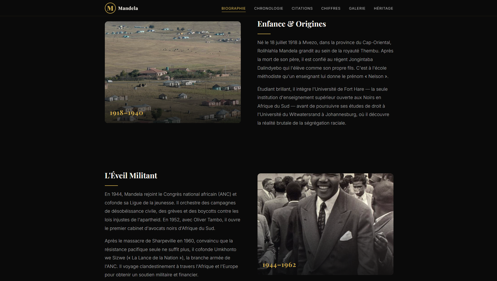
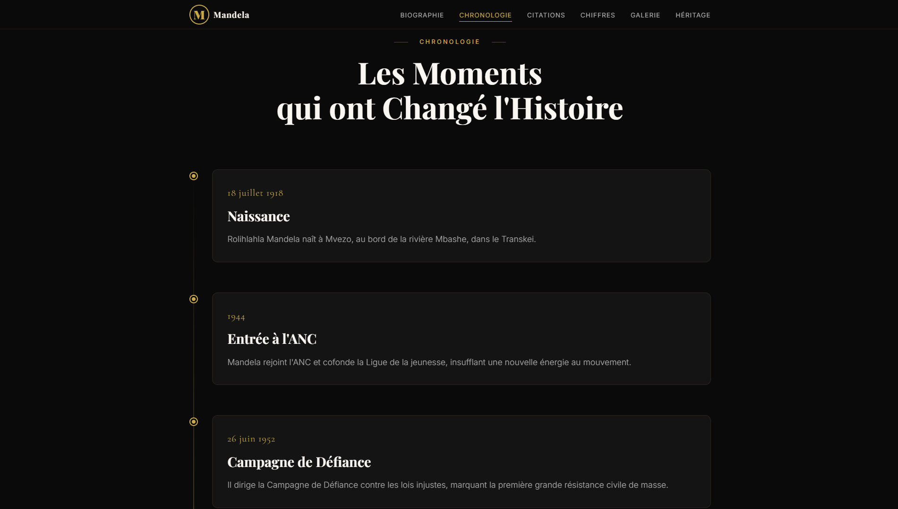
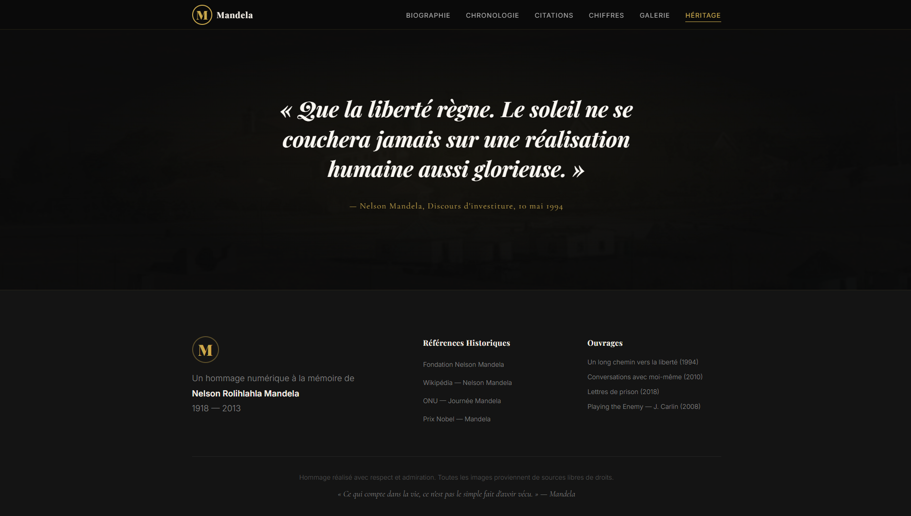

Biographie · Site vitrine
Nelson Mandela — biographie
Site web biographique pour une connaissance : analyse des besoins, design moderne, développement et déploiement sur hébergement en ligne pour valoriser sa présence digitale.
01 — Présence en ligne
Site biographique & image
Création d’un site web biographique pour mettre en valeur le parcours et l’héritage : design moderne or et sombre, navigation claire (biographie, chronologie, citations, galerie, héritage).
Objectifs : valoriser l’image en ligne, améliorer la visibilité et prévoir l’hébergement du site pour un accès public stable.
02 — Contenu
Parcours biographique
Mise en forme du récit par sections (enfance, engagement militant, etc.) avec images, typographie éditoriale et rythme de lecture pensé pour la biographie.

03 — Mode projet
De l’audit à la mise en ligne
Démarche en mode projet : analyse des besoins du client, planification des étapes (audit, design, développement, mise en ligne), suivi de réalisation et adaptations au fil du projet.

04 — Mise en production
Service en ligne & hébergement
Déploiement du site, mise en production sur hébergement, vérification du bon fonctionnement et mise à disposition pour l’utilisateur final.
Gestion du patrimoine informatique (partiel) : ressources du site, organisation des accès et maintien du service en ligne.

05 — Axes du projet
Points concernés
Quatre volets : présence digitale, conduite de projet, service livré aux utilisateurs et maintien de l’hébergement.
- Présence en ligne Site biographique, design moderne, visibilité et valorisation de l’image.
- Mode projet Besoins client, planification (audit → mise en ligne), suivi et adaptation.
- Service utilisateurs Déploiement, production, tests et accès pour l’utilisateur final.
- Patrimoine info. Hébergement, ressources du site, accès et maintien du service (partiel).